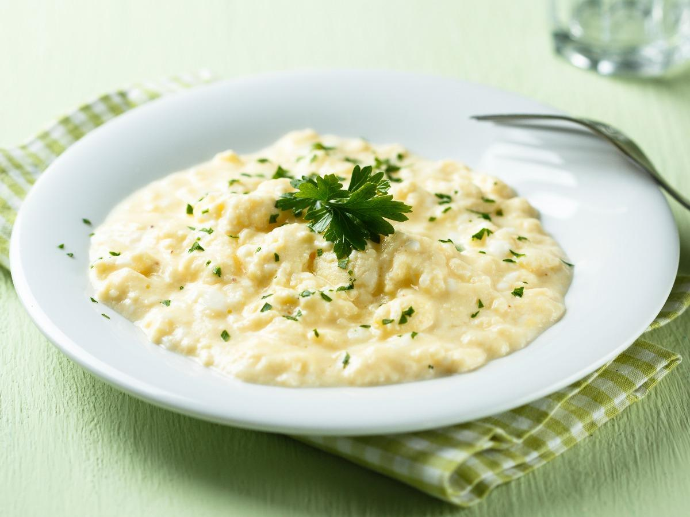

A beautiful homemade breakfast dish inspired by Gordon Ramsay, so creamy and yummy!
Description
This recipe only has a few ingredients but cooking time is pretty fast. Once you've made this once, you'll want to make this again.
Try to have all the ingredients nearby within reach as you are cooking else the eggs may cook too far. Happy cooking!
Ingredients
(Serves 1 person)
2-3 eggs beaten
2-3 tbsp creme fraiche or can use ricotta cheese
herbs
1/4 tbsp thyme
1/4 tbsp oregano
1/4 tbsp basil
olive oil
unsalted butter - 1 tbsp
chives (optional)
salt and pepper to taste
Steps
Heat a pan that is nonstick and has a tall side. You need this so that when stirring the eggs, they don't spill over on the side. Put a tbsp of butter and a tbsp of olive oil in the pan. Heat up well and melt over medium heat.
Pour the beaten eggs into the heated pan. Let sit for about 30 seconds so that they set a little bit. Then using a silicone spatula, start mixing the egg. Take off heat and keep mixing.
Alternate between putting the pan on the heat and taking off the heat while stirring. You want the egg to cook but not be too firm or rubbery.
Start seasoning the egg mixture once the eggs are getting a little firm. Add the thyme, oregano, and basil. Add salt and pepper to taste.
Turn off the stove and take the pan off heat. Add the creme fraiche to the egg mixture and mix well. The eggs should look a little loose, a little bit like porridge, but shouldn't be raw. If you don't like your eggs that loose, you can cook a little further before adding the creme fraiche.
Plate the egg mixture and add some of the chopped chives. Enjoy!